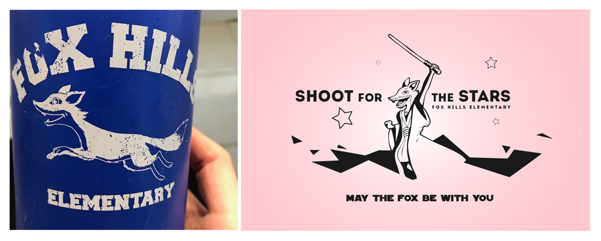
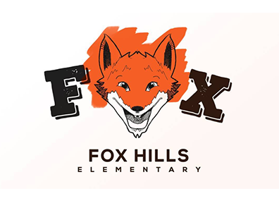
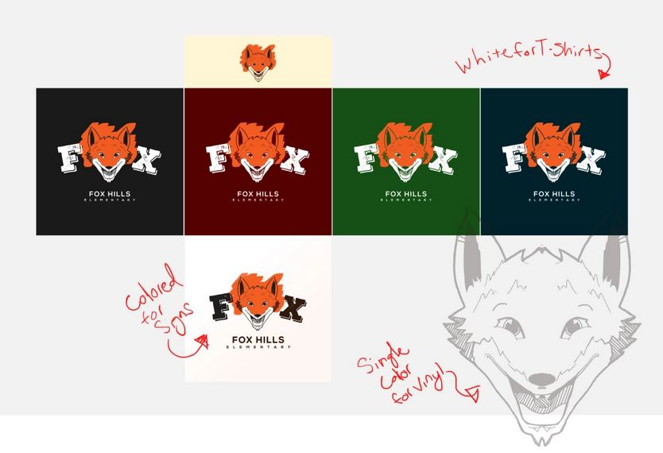

Client: Fox Hills Elementary School
Project duties:
- Design a new logo that kept past branding and could also double as a t-shirt design for students.
Developing Branding [Goals/Objectives]:
While meeting with the head of the school board, she specified that the new logo should still be recognizable as their previous fox school mascot, that the color palette preferred by the board was navy blue, orange, and white, and that they would be able to pay for two flat colors during t-shirt printing.
(previous fox designs)
Because the fox mascot design was pre-existing, most of the company identity work was already done for me. I went to the drawing board and quickly sketched out some ideas while asking myself the following:
- Is this logo scalable?
- Does it work in black and white as well as color?
- Will it hold-up on a white as well as a dark background?
- Does it stand out against competitors while still fitting the genre?
- Does it portray company feelings and values?
- and, special to this project, can this use only two screen-printing colors while remaining appealing?
After several sketches and iterations, we decided on the front facing fox.
 I decided to use a front-view of the fox’s face to accomplish the school board’s goal of presenting the mascot as a friend the kids could identify with. I created a final vector version of my proposed logo design and sent it in for approval. Only minor adjustments were needed afterwards.
Fox Hills Elementary was an exceptional project where I learned the importance of branding and visual appeal, but also that what’s most important is making sure the logo fits expectations and is delivered on time.